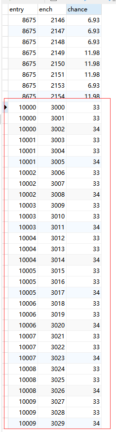
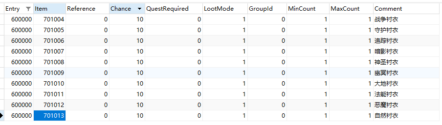
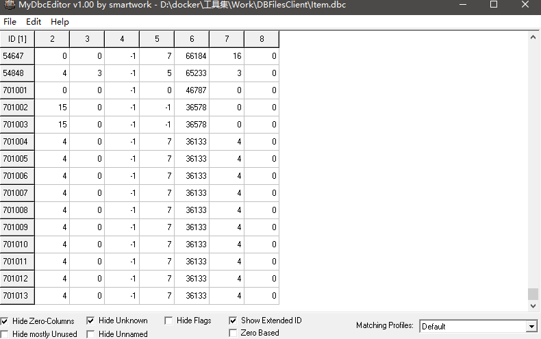

如何制作装备和添加掉落
前言
前面我们已经讲过如何制作《如何制作物品随机附魔 | GSWXY》，但文章所介绍的仅仅是给现有装备添加附魔，那么：
- 我如果想自己创造一个装备怎么办呢？
- 这个创造的装备怎么样让玩家获得呢？
这篇文章我们就介绍下如何通过数据库和DBC制作物品或装备，并添加掉落，所需的工具依然为：
- Navicat，连接数据库用；
- MPQEditor（提取码：3q32），制作客户端补丁用；
- MyDbcEditor（提取码：qqi2）或WDBX Editor工具（提取码：qkn1），编辑dbc文件用。
本文直接用操作实例的方式讲解，目的：制作不同职业的衬衣，然后随机附魔遗产技能，最后添加世界掉落。
装备制作
涉及物品制作的数据库为item-template表，该表保存游戏中存在的每个物品的信息，所有物品都是根据存储在这个表中的模板创建的。该表各个字段的介绍请参考《Acore-world 数据库之 item-template 表全面解释 | GSWXY》。
使用Navicat工具，挨着看上述文章字段解释就能自己创建一个装备出来，但最好的方式是直接复制一个现有的装备，然后修改一些字段。比如我们想制作一个衬衣，那么直接复制entry为23476的侍从衬衣，然后：
更改
entry为其他值（不可与现有的表内值冲突），比如我这里更改为701004；更改
name为战争衬衣，即游戏里装备显示的名字；更改
Quality为6，即该件装备为红色品质；更改
AllowableClass为1，即该件装备只能战士职业才能使用，其他数值的意思请参考《DBC文件之ChrClasses.dbc全面解释 | GSWXY》；更改
bonding为1，即该件装备拾取绑定。
其他数值不必改动，接下来依次创建其他职业的衬衣。
随机附魔
根据《如何制作物品随机附魔 | GSWXY》教程，实践部分第五步里，如果我想把所属职业的遗产技能分别添加到对应职业的衬衣里，则：
附魔ID
需要在item_enchantment_template表内，每个职业建立3个附魔ID，分别对应每个职业的3个遗产技能，并修改chance确保合计为100，如图所示：

添加附魔
需要将item-template表内701004装备的RandomPropery字段更改为10000，需要将item-template表内701005装备的RandomPropery字段更改为10001，以此类推，直到701013装备的RandomPropery字段更改为10009。
添加掉落
在开始下面操作之前，请详细阅读《Acore-world数据库之各类loot-template表全面解释 | GSWXY》，以便了解掉落机制。
设置参考掉落表
我们在reference_loot_template表内新建一个entry值为600000的参考掉落，Item值依次填写701004至701013，Chance值都设置为10，Comment值可填可不填，如图所示：

添加世界掉落
接下来在creature_loot_template表内添加生物掉落，在Navicat工具里执行SQL语句：
CREATE TABLE temp LIKE creature_loot_template; |
添加掉落已完成，效果为所有生物有1%的概率掉落各职业遗产技能衬衣，且每次发生掉落时候都会有10%的均等概率掉落不同职业的衬衣。换句话说，如果玩家想得到对应职业的遗产技能衬衣的概率为1‰。
补丁制作
制作完物品后要打相应的补丁，不然进入游戏后物品图标就是问号：
服务端补丁
这里牵扯到item.dbc，该DBC文件各个字段的介绍请参考《DBC文件之item.dbc全面解释 | GSWXY》。该文件和数据库item-template相对应，在item-template里加新装备，得在item.dbc里相应添加。
这里我们使用MyDbcEditor工具依次添加701004到701013的装备，取巧的办法为建好701004装备后，直接菜单栏点Edit-Copy Line to，回车即可，如图所示：

最后按Ctrl+S保存后，上传到你服务端的dbc目录，覆盖原文件。
客户端补丁
新建客户端补丁文件夹，在其目录下再新建DBFilesClient文件夹，将你制作item.dbc文件的放入其中；
右键以管理员方式打开MPQEditor工具，点菜单栏新建MPQ，文件名输入patch-zhCN-A.MPQ，点下一步，点从文件或者文件夹创建MPQ文档，选择客户端补丁文件夹，一直下一步即可制作好客户端补丁，请放入你游戏客户端World of Warcraft\Data\zhCN文件夹内。
注意：在这里不要遗忘你更改的其他dbc文件，比如我把《如何制作物品随机附魔 | GSWXY》里改的
Spell.dbc、SpellItemEnchantment.dbc、ItemRandomProperties.dbc三个文件也放入MPQ补丁文件内。
 微信
微信 支付宝
支付宝